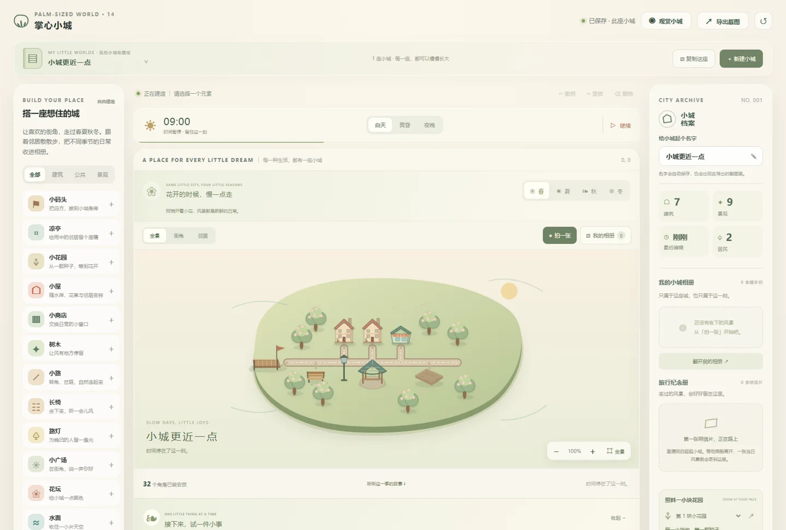

布置可以慢慢想
放置、移动、旋转与撤销重做，让每一次改建都可以再试；环境细节回应周围布置。

01 / THE STARTING POINT
建造不一定要围绕预算和胜负。先给人一片能自由布置的小岛，再让道路、邻居、天气和故事慢慢建立关系，让一个角落值得回来看看。
02 / EXPERIENCE DESIGN
不只列出功能，也解释为什么这样做。
放置、移动、旋转与撤销重做，让每一次改建都可以再试；环境细节回应周围布置。
居民沿路购物、休息和赴约，四季小故事需要真实的道路与设施，生活与建造相互联系。
跟随居民漫游、拍照、写留言，再把小城和回忆一起保存；旧照片保留当时的画面。
03 / WORK IN PROGRESS
选取已经完成的创作阶段，
记录每次变化的意义。
从自由摆放小屋、道路和树木开始，用轻松的操作把想象变成一处可以停留的地方。
从一块空地，到自己的小城。
居民生活、天气、花园、来客与四季故事逐步展开；相册、多城收藏和备份让回忆可以留下。
从静态布景，到会发生故事的日常。
照顾手机取景，加入主动靠近选中元素和布置反馈。树边、水边与花园附近也出现相应的小细节。
从看见整座岛，到亲近一个喜欢的角落。
04 / YOUR FIRST FEW MINUTES
用几分钟，认识这个作品。
先安放一间小屋，用小路连起喜欢的角落。
看看邻居的小心愿，尝试布置一张树旁长椅。
切换一个季节，跟着居民走走，再拍一张照片。
IDEAS ARE BETTER WHEN EXPERIENCED
小城自动保存在当前浏览器。换设备前，可在收藏馆备份小城，再到另一个设备导入。